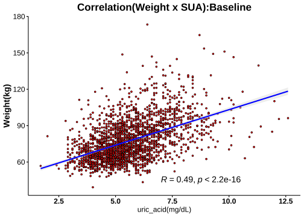

1.8 分層分析-3: 尿酸(Serum Uric Acid)
1.8.1 相關分析(Correlation Analysis)




1.8.2 Cutoff-1 (♂7.6/♀6.6)
| No change | Decrease | Increase | Normal>High | High>Normal | High>High | Sum | |
|---|---|---|---|---|---|---|---|
| female | 90 | 516 | 132 | 29 | 79 | 26 | 872 |
| male | 14 | 71 | 18 | 6 | 41 | 18 | 168 |
| Sum | 104 | 587 | 150 | 35 | 120 | 44 | 1040 |
|
Cutoffs: Male: 7.6 (mg/dL) Female: 6.6(mg/dL) |


成效(Effectiveness)


成效(%)-Blood

| No change | Decrease | Increase | Normal>High | High>Normal | High>High | No change | Decrease | Increase | Normal>High | High>Normal | High>High | |
|---|---|---|---|---|---|---|---|---|---|---|---|---|
| 體重(T0) | 71.01 ± 1.25 | 72.1 ± 0.56 | 70.85 ± 1.08 | 74.57 ± 2.34 | 81.64 ± 1.51 | 83.84 ± 2.9 | 95.39 ± 6.84 | 93.04 ± 1.6 | 85.89 ± 3.35 | 98.37 ± 10.79 | 99.22 ± 2.25 | 102.03 ± 5.49 |
| BMI(T0) | 27.89 ± 0.47 | 27.86 ± 0.21 | 27.38 ± 0.37 | 28.98 ± 0.72 | 31.6 ± 0.56 | 32.58 ± 1.17 | 32.28 ± 2.52 | 31.01 ± 0.49 | 28.35 ± 0.96 | 32.58 ± 3.1 | 32.82 ± 0.59 | 33.57 ± 1.71 |
| 體脂重(T0) | 29.04 ± 0.86 | 28.73 ± 0.4 | 28.04 ± 0.74 | 31.93 ± 1.68 | 35.65 ± 1.07 | 37.75 ± 2.19 | 34.25 ± 5.07 | 30.43 ± 1.03 | 25.89 ± 2.15 | 34.88 ± 6.92 | 35.43 ± 1.67 | 37.69 ± 4.14 |
| 體脂率(T0) | 40.26 ± 0.64 | 39.07 ± 0.27 | 38.91 ± 0.53 | 42.14 ± 0.97 | 43.09 ± 0.58 | 44.25 ± 1.21 | 34.02 ± 2.21 | 32.25 ± 0.65 | 29.55 ± 1.59 | 34.08 ± 3.12 | 35.1 ± 0.93 | 35.32 ± 2.08 |
| 骨骼肌質量指數(T0) | 6.67 ± 0.08 | 6.85 ± 0.03 | 6.74 ± 0.06 | 6.83 ± 0.1 | 7.32 ± 0.09 | 7.33 ± 0.16 | 8.64 ± 0.3 | 8.88 ± 0.09 | 8.44 ± 0.19 | 8.97 ± 0.51 | 8.94 ± 0.08 | 8.94 ± 0.2 |
| 骨骼肌率(T0) | 32.41 ± 0.35 | 33.19 ± 0.15 | 33.15 ± 0.29 | 31.52 ± 0.51 | 31.19 ± 0.32 | 30.59 ± 0.67 | 37.13 ± 1.22 | 38.37 ± 0.39 | 39.64 ± 0.93 | 36.99 ± 1.68 | 36.74 ± 0.55 | 36.58 ± 1.16 |
| 內臟脂肪面積(T0) | 143.26 ± 5.07 | 142.17 ± 1.98 | 140.92 ± 3.86 | 159.11 ± 8.39 | 173.69 ± 4.37 | 189.94 ± 8.47 | 137.82 ± 14.03 | 130.22 ± 5.25 | 107.55 ± 9.97 | 126.38 ± 18.36 | 148.79 ± 6.86 | 139.79 ± 15.99 |
| 腰圍(T0) | 91.88 ± 1.1 | 92.19 ± 0.5 | 90.99 ± 0.93 | 95.81 ± 2.3 | 100.93 ± 1.23 | 103.32 ± 2.49 | 107.18 ± 4.64 | 104.63 ± 1.28 | 97.15 ± 2.82 | 107.15 ± 7.97 | 112.14 ± 2.17 | 111.82 ± 4.54 |
| 除脂體重(T0) | 41.97 ± 0.57 | 43.37 ± 0.23 | 42.81 ± 0.49 | 42.63 ± 0.81 | 45.99 ± 0.61 | 46.1 ± 1.08 | 61.14 ± 1.88 | 62.61 ± 0.86 | 60.01 ± 1.81 | 63.48 ± 4.74 | 63.79 ± 0.96 | 64.34 ± 1.88 |
| 基礎代謝率(T0) | 1276.66 ± 12.22 | 1306.91 ± 5.03 | 1294.69 ± 10.59 | 1291.03 ± 17.45 | 1363.34 ± 13.24 | 1365.62 ± 23.35 | 1690.93 ± 40.65 | 1722.46 ± 18.61 | 1666.06 ± 39.06 | 1741.33 ± 102.36 | 1747.76 ± 20.72 | 1759.78 ± 40.5 |
| 糖化血色素(T0) | 5.5 ± 0.03 | 5.47 ± 0.02 | 5.46 ± 0.05 | 5.54 ± 0.09 | 5.69 ± 0.06 | 6.08 ± 0.33 | 5.98 ± 0.15 | 5.66 ± 0.06 | 6.13 ± 0.27 | 5.72 ± 0.3 | 5.69 ± 0.05 | 5.82 ± 0.22 |
| 空腹血糖(T0) | 87.09 ± 2.98 | 85.41 ± 0.45 | 84.52 ± 1.25 | 86.03 ± 2.23 | 87.97 ± 1.63 | 96.81 ± 8.82 | 92.5 ± 2.55 | 89.17 ± 1.32 | 99.94 ± 8.42 | 92.67 ± 7.31 | 86 ± 1.54 | 88.67 ± 3.77 |
| 空腹胰島素(T0) | 11.29 ± 0.71 | 11.13 ± 0.34 | 10 ± 0.51 | 14.44 ± 2.05 | 17.68 ± 1.35 | 20.45 ± 3.98 | 19.91 ± 3.57 | 16.05 ± 1.25 | 16.55 ± 2.15 | 17.55 ± 6.77 | 20.83 ± 2.09 | 18.97 ± 2.83 |
| 胰島素阻抗值(T0) | 2.39 ± 0.17 | 2.47 ± 0.1 | 2.11 ± 0.11 | 3.12 ± 0.46 | 3.92 ± 0.31 | 4.68 ± 0.87 | 4.58 ± 0.81 | 3.58 ± 0.29 | 4.33 ± 0.9 | 4.58 ± 2.23 | 4.58 ± 0.55 | 4.36 ± 0.74 |
| β細胞功能(T0) | 196.7 ± 15.83 | 192.49 ± 13.16 | 220.41 ± 55.48 | 248.38 ± 36.4 | 299.49 ± 34.53 | 335.35 ± 62.07 | 256.94 ± 52.57 | 241.86 ± 26.52 | 214.99 ± 25.74 | 200.13 ± 42.15 | 368.1 ± 43.92 | 319.27 ± 42.93 |
| 三酸甘油脂(T0) | 102.22 ± 4.63 | 104.71 ± 2.49 | 93.63 ± 4.03 | 93.9 ± 8.68 | 149.13 ± 9.26 | 168.35 ± 36.75 | 147.07 ± 20.16 | 141.97 ± 10.56 | 162.78 ± 21.77 | 110.17 ± 15.28 | 195.8 ± 17.96 | 156.17 ± 22.18 |
| 總膽固醇(T0) | 200.02 ± 3.75 | 196.4 ± 1.63 | 195.86 ± 3 | 196.62 ± 7.77 | 199.89 ± 5.06 | 196.12 ± 6.57 | 181.93 ± 10.71 | 197.3 ± 4.07 | 192 ± 8.09 | 191.17 ± 9.98 | 203.9 ± 6.18 | 208 ± 13.13 |
| 高密度脂蛋白(T0) | 57.72 ± 1.48 | 56.95 ± 0.57 | 58.54 ± 1.14 | 57.43 ± 2.64 | 51.06 ± 1.24 | 47.02 ± 2.42 | 42.71 ± 1.18 | 46.27 ± 0.87 | 45.97 ± 2.32 | 45.8 ± 2.7 | 41.82 ± 1.49 | 44.29 ± 3.44 |
| 低密度脂蛋白(T0) | 123.26 ± 3.22 | 122.14 ± 1.43 | 120.78 ± 2.56 | 125.03 ± 6.77 | 126.96 ± 4.38 | 124.54 ± 6.74 | 122.5 ± 9.81 | 130.79 ± 3.52 | 124.17 ± 7.3 | 128.83 ± 9.25 | 133.85 ± 5.54 | 138.11 ± 11.52 |
| 尿酸(T0) | 4.74 ± 0.09 | 5.09 ± 0.04 | 4.35 ± 0.07 | 5.45 ± 0.14 | 7.3 ± 0.08 | 7.61 ± 0.2 | 5.49 ± 0.35 | 6.25 ± 0.1 | 5.24 ± 0.25 | 6.9 ± 0.3 | 8.44 ± 0.11 | 9.2 ± 0.32 |
| 澱粉脢(T0) | 43.57 ± 1.31 | 45.85 ± 0.66 | 46.47 ± 1.47 | 48.59 ± 2.77 | 43.15 ± 1.66 | 36.5 ± 1.99 | 41.07 ± 3.24 | 44.73 ± 2.45 | 47.5 ± 2.87 | 40.17 ± 3.16 | 39.61 ± 1.82 | 39.5 ± 3.59 |
| 解脂脢(T0) | 24.22 ± 1.08 | 24.16 ± 0.63 | 24.83 ± 1.72 | 25.66 ± 2.37 | 26.34 ± 1.83 | 29 ± 2.68 | 24.64 ± 3.42 | 29.82 ± 3.88 | 28.39 ± 4.35 | 22.67 ± 3.31 | 27.41 ± 2.76 | 23.72 ± 3.8 |
| 體重(T1) | 66.22 ± 1.21 | 67.7 ± 0.54 | 65.72 ± 1.01 | 67.84 ± 2.1 | 76.37 ± 1.51 | 78.09 ± 2.74 | 88.81 ± 6.68 | 86.38 ± 1.54 | 80.63 ± 3.08 | 88.25 ± 9.61 | 93 ± 2.3 | 94.33 ± 5.5 |
| BMI(T1) | 25.75 ± 0.43 | 26.16 ± 0.2 | 25.39 ± 0.34 | 26.37 ± 0.64 | 29.56 ± 0.56 | 30.34 ± 1.1 | 30.07 ± 2.46 | 28.78 ± 0.47 | 26.63 ± 0.91 | 29.22 ± 2.75 | 30.75 ± 0.62 | 31.04 ± 1.74 |
| 體脂重(T1) | 25.43 ± 0.84 | 25.7 ± 0.39 | 24.55 ± 0.69 | 27.83 ± 1.62 | 32.12 ± 1.1 | 33.86 ± 2.05 | 29.66 ± 4.94 | 25.7 ± 1.01 | 22.11 ± 2.17 | 27.28 ± 5.97 | 31.02 ± 1.76 | 31.61 ± 4.17 |
| 體脂率(T1) | 37.61 ± 0.68 | 37.1 ± 0.29 | 36.65 ± 0.55 | 40.21 ± 1.19 | 41.27 ± 0.68 | 42.55 ± 1.25 | 31.29 ± 2.49 | 29.18 ± 0.72 | 26.66 ± 1.79 | 29.27 ± 3.4 | 32.53 ± 1.08 | 31.47 ± 2.37 |
| 骨骼肌質量指數(T1) | 6.42 ± 0.07 | 6.61 ± 0.03 | 6.48 ± 0.06 | 6.4 ± 0.09 | 7.02 ± 0.08 | 7.05 ± 0.16 | 8.47 ± 0.34 | 8.57 ± 0.09 | 8.23 ± 0.15 | 8.62 ± 0.45 | 8.67 ± 0.09 | 8.71 ± 0.21 |
| 骨骼肌率(T1) | 33.72 ± 0.36 | 34.12 ± 0.16 | 34.21 ± 0.3 | 32.29 ± 0.63 | 32.06 ± 0.36 | 31.41 ± 0.68 | 38.55 ± 1.39 | 39.97 ± 0.41 | 41.14 ± 1.06 | 39.67 ± 1.84 | 38.11 ± 0.62 | 38.56 ± 1.31 |
| 內臟脂肪面積(T1) | 124.99 ± 4.91 | 125.87 ± 1.99 | 122.03 ± 3.77 | 141.14 ± 8.41 | 157.14 ± 4.84 | 165.03 ± 9.65 | 114.15 ± 12.18 | 107.1 ± 4.89 | 94.99 ± 9.29 | 115.27 ± 26.12 | 129.47 ± 7.57 | 108.5 ± 14.77 |
| 腰圍(T1) | 87.36 ± 1.11 | 87.75 ± 0.49 | 85.85 ± 0.9 | 89.41 ± 2.17 | 96.01 ± 1.28 | 98.33 ± 2.47 | 98.9 ± 4.18 | 97.77 ± 1.32 | 91.32 ± 2.98 | 97.68 ± 7.46 | 106.02 ± 2.35 | 103.91 ± 4.72 |
| 除脂體重(T1) | 40.79 ± 0.52 | 42 ± 0.22 | 41.17 ± 0.47 | 40.01 ± 0.7 | 44.25 ± 0.58 | 44.23 ± 1.03 | 59.14 ± 1.91 | 60.69 ± 0.82 | 58.52 ± 1.58 | 60.97 ± 4.34 | 61.98 ± 0.9 | 62.72 ± 1.85 |
| 基礎代謝率(T1) | 1251.21 ± 11.21 | 1277.16 ± 4.81 | 1259.17 ± 10.19 | 1234.21 ± 15.15 | 1325.82 ± 12.51 | 1325.27 ± 22.23 | 1647.64 ± 41.33 | 1680.72 ± 17.62 | 1634.06 ± 34.07 | 1686.83 ± 93.69 | 1708.61 ± 19.52 | 1724.5 ± 39.99 |
| 糖化血色素(T1) | 5.27 ± 0.04 | 5.23 ± 0.01 | 5.15 ± 0.03 | 5.18 ± 0.06 | 5.37 ± 0.05 | 5.52 ± 0.15 | 5.61 ± 0.1 | 5.33 ± 0.04 | 5.53 ± 0.14 | 5.17 ± 0.14 | 5.37 ± 0.05 | 5.33 ± 0.09 |
| 空腹血糖(T1) | 78.66 ± 1.82 | 78.45 ± 0.35 | 73.3 ± 0.93 | 69.17 ± 1.58 | 80.24 ± 1.04 | 75.5 ± 2.99 | 82.36 ± 2.72 | 79.44 ± 0.97 | 79.5 ± 3.37 | 67.83 ± 4.41 | 79.76 ± 1.32 | 77.56 ± 2.48 |
| 空腹胰島素(T1) | 8.59 ± 0.68 | 9.21 ± 0.29 | 6.88 ± 0.46 | 9.14 ± 1.38 | 14.12 ± 1.09 | 15.02 ± 2.73 | 13.88 ± 2.36 | 11.24 ± 0.92 | 13.54 ± 4.65 | 5.83 ± 2.24 | 18.02 ± 2.61 | 12.87 ± 2.47 |
| 胰島素阻抗值(T1) | 1.72 ± 0.16 | 1.82 ± 0.06 | 1.31 ± 0.1 | 1.64 ± 0.27 | 2.89 ± 0.24 | 3.03 ± 0.61 | 2.89 ± 0.54 | 2.25 ± 0.19 | 3.08 ± 1.28 | 1.07 ± 0.47 | 3.72 ± 0.64 | 2.52 ± 0.49 |
| β細胞功能(T1) | 309.56 ± 53.79 | 239.69 ± 14.56 | 204.41 ± 48.65 | 672.26 ± 259.84 | 383.08 ± 63.24 | 591.3 ± 207.69 | 296.84 ± 45.18 | 275.54 ± 55.75 | 283.97 ± 53.14 | 524.22 ± 426.21 | 380.64 ± 55.52 | 408.17 ± 80.9 |
| 三酸甘油脂(T1) | 95.61 ± 4.56 | 89.6 ± 2.2 | 90.85 ± 2.71 | 102.24 ± 5.41 | 112.81 ± 5.89 | 116.23 ± 7.5 | 135.14 ± 25.52 | 108.08 ± 5.94 | 138.33 ± 12.77 | 125.5 ± 18.76 | 174.73 ± 23.29 | 122.33 ± 11.76 |
| 總膽固醇(T1) | 209.81 ± 5.03 | 197.12 ± 1.81 | 205.49 ± 4.14 | 205.59 ± 10.49 | 190.8 ± 4.65 | 186.15 ± 6.55 | 175.79 ± 13.51 | 192.15 ± 5.15 | 204.44 ± 11.5 | 200.67 ± 16.85 | 193.59 ± 6.18 | 206.33 ± 14.09 |
| 高密度脂蛋白(T1) | 52.07 ± 1.37 | 51.96 ± 0.52 | 50.72 ± 1.02 | 43.84 ± 2.03 | 47.59 ± 1.05 | 42.92 ± 2.49 | 38.62 ± 1.24 | 42.89 ± 0.93 | 43.31 ± 2.68 | 39.42 ± 4.29 | 39.87 ± 1.69 | 39.94 ± 2.88 |
| 低密度脂蛋白(T1) | 135.58 ± 4.27 | 126.76 ± 1.56 | 133.45 ± 3.31 | 139.97 ± 9.28 | 122.63 ± 4.07 | 121.85 ± 6.47 | 116.07 ± 9.81 | 129.44 ± 4.13 | 135.61 ± 11.03 | 137.17 ± 13.53 | 127.8 ± 5.5 | 142.72 ± 11.45 |
| 尿酸(T1) | 4.74 ± 0.1 | 3.99 ± 0.03 | 5.14 ± 0.07 | 7.4 ± 0.14 | 5.13 ± 0.1 | 7.56 ± 0.19 | 5.52 ± 0.37 | 4.79 ± 0.09 | 6.21 ± 0.26 | 8.48 ± 0.32 | 6.28 ± 0.16 | 8.75 ± 0.23 |
| 澱粉脢(T1) | 44.78 ± 1.45 | 48.48 ± 0.73 | 45.44 ± 1.4 | 47.34 ± 3.14 | 46.32 ± 1.75 | 38.38 ± 1.8 | 41.93 ± 3.17 | 44.27 ± 2.4 | 50.11 ± 4.15 | 39.17 ± 4.69 | 40.07 ± 1.55 | 41.39 ± 3.66 |
| 解脂脢(T1) | 35.3 ± 1.82 | 37.34 ± 1.35 | 33.64 ± 1.47 | 44.21 ± 5.74 | 41.04 ± 3.27 | 36.08 ± 3 | 27.57 ± 3.04 | 41.44 ± 4.9 | 36.88 ± 4.78 | 34.83 ± 7.84 | 35.37 ± 2.05 | 33.17 ± 4.35 |
| 年齡 | 39.8 ± 1.29 | 38.91 ± 0.43 | 38.29 ± 0.71 | 38.45 ± 2.21 | 42.04 ± 1.52 | 38.92 ± 2.08 | 40 ± 3.44 | 40.34 ± 1.31 | 41.83 ± 2.87 | 35.67 ± 3.04 | 37.27 ± 1.65 | 34.78 ± 2.62 |
| 飲食紀錄完成率(%) | 66.98 ± 3.19 | 61.2 ± 1.32 | 74.37 ± 2.19 | 74.89 ± 4.32 | 59.66 ± 3.49 | 78.48 ± 5.03 | 58.52 ± 9.97 | 61.64 ± 3.39 | 61.5 ± 8.12 | 75.15 ± 10.3 | 58.12 ± 5.29 | 64.66 ± 6.61 |
| 紀錄數量 | 174.64 ± 14.65 | 158.68 ± 5.47 | 212.65 ± 15.32 | 219.69 ± 37.04 | 139.56 ± 12.89 | 212.04 ± 24.65 | 124.71 ± 34.46 | 172.79 ± 17.42 | 181.5 ± 46.18 | 185.33 ± 67.56 | 134.73 ± 28.54 | 165.67 ± 43.2 |
| 上傳照片張數 | 145.13 ± 10.46 | 134.1 ± 4.51 | 173.48 ± 9.42 | 160.97 ± 15.92 | 118.63 ± 10.42 | 172.96 ± 24.18 | 104 ± 19.41 | 145.72 ± 14.61 | 167.78 ± 32.06 | 219.83 ± 68.96 | 130.46 ± 19.52 | 160.61 ± 42.27 |
| 碳水攝取率(E%) | 18.14 ± 0.71 | 19.85 ± 0.3 | 16.67 ± 0.45 | 16.08 ± 1.01 | 19.49 ± 0.78 | 15.15 ± 1.28 | 19.81 ± 2.7 | 18.59 ± 0.77 | 19.04 ± 1.84 | 12.95 ± 1.7 | 19.49 ± 1.09 | 15.06 ± 1.09 |
| 蛋白攝取率(E%) | 27.91 ± 0.29 | 27.14 ± 0.13 | 27.93 ± 0.22 | 27.95 ± 0.42 | 27.02 ± 0.3 | 28.26 ± 0.6 | 27.57 ± 1.03 | 27.82 ± 0.33 | 26.91 ± 0.69 | 30.23 ± 0.66 | 27.19 ± 0.46 | 28.57 ± 0.74 |
| 脂肪攝取率(E%) | 53.95 ± 0.54 | 53.01 ± 0.22 | 55.41 ± 0.35 | 55.98 ± 0.84 | 53.49 ± 0.59 | 56.59 ± 0.93 | 52.63 ± 1.9 | 53.59 ± 0.59 | 54.06 ± 1.24 | 56.82 ± 1.84 | 53.32 ± 0.8 | 56.37 ± 0.77 |
| 總攝取熱量(日) | 980.72 ± 16.77 | 984.81 ± 6.87 | 996.59 ± 13.75 | 1000.88 ± 25.48 | 1005.93 ± 20.14 | 991.38 ± 27.72 | 1111.87 ± 65.94 | 1117.24 ± 24.37 | 1060.68 ± 45.75 | 1127.4 ± 139.36 | 1078.62 ± 36.44 | 1150.85 ± 40.21 |
| 綠燈率 | 84.7 ± 1.53 | 79.78 ± 0.72 | 85.28 ± 1.3 | 89.95 ± 1.68 | 79.84 ± 1.73 | 87.25 ± 3.16 | 73.61 ± 7.09 | 81.24 ± 1.86 | 83.47 ± 3.83 | 87.62 ± 2.58 | 77.09 ± 3.29 | 85.76 ± 2.95 |
| 黃燈率 | 13.4 ± 1.32 | 17.49 ± 0.65 | 13.16 ± 1.18 | 8.51 ± 1.4 | 15.99 ± 1.47 | 11.18 ± 2.88 | 23.35 ± 6.15 | 16.75 ± 1.66 | 15.42 ± 3.59 | 12.35 ± 2.6 | 18.96 ± 2.91 | 12.78 ± 2.74 |
| 紅燈率 | 1.9 ± 0.4 | 2.72 ± 0.24 | 1.56 ± 0.29 | 1.54 ± 0.59 | 4.18 ± 0.99 | 1.58 ± 0.54 | 3.04 ± 1.45 | 2 ± 0.56 | 1.11 ± 0.43 | 0.03 ± 0.03 | 3.95 ± 1.24 | 1.46 ± 0.66 |
| 水果(日) | 0.09 ± 0.02 | 0.08 ± 0.01 | 0.08 ± 0.01 | 0.05 ± 0.02 | 0.09 ± 0.02 | 0.03 ± 0.01 | 0.04 ± 0.01 | 0.04 ± 0.01 | 0.09 ± 0.06 | 0.02 ± 0.01 | 0.05 ± 0.02 | 0.04 ± 0.01 |
| 蔬菜(日) | 3.41 ± 0.12 | 3.2 ± 0.05 | 3.61 ± 0.1 | 3.76 ± 0.21 | 3.21 ± 0.12 | 3.55 ± 0.17 | 3.14 ± 0.36 | 3.32 ± 0.15 | 3.84 ± 0.36 | 3.86 ± 0.59 | 3.1 ± 0.19 | 3.76 ± 0.24 |
| 全穀雜糧(日) | 1.67 ± 0.11 | 2.04 ± 0.05 | 1.42 ± 0.07 | 1.33 ± 0.15 | 2.04 ± 0.15 | 1.23 ± 0.19 | 2.32 ± 0.37 | 2.3 ± 0.16 | 1.95 ± 0.32 | 0.99 ± 0.12 | 2.34 ± 0.23 | 1.62 ± 0.29 |
| 蛋豆魚肉(日) | 8.74 ± 0.19 | 8.4 ± 0.08 | 8.99 ± 0.16 | 8.99 ± 0.26 | 8.57 ± 0.21 | 9.13 ± 0.37 | 9.91 ± 0.95 | 9.91 ± 0.26 | 9.04 ± 0.56 | 11.34 ± 1.56 | 9.35 ± 0.41 | 10.62 ± 0.38 |
| 乳品(日) | 0.05 ± 0.01 | 0.08 ± 0.01 | 0.05 ± 0.01 | 0.03 ± 0.01 | 0.07 ± 0.01 | 0.03 ± 0.01 | 0.08 ± 0.04 | 0.04 ± 0.01 | 0.05 ± 0.02 | 0.04 ± 0.01 | 0.06 ± 0.01 | 0.04 ± 0.02 |
| 油脂(日) | 3.69 ± 0.12 | 3.83 ± 0.05 | 3.94 ± 0.07 | 3.93 ± 0.14 | 3.84 ± 0.11 | 3.89 ± 0.18 | 4.08 ± 0.34 | 4.23 ± 0.13 | 4.12 ± 0.25 | 3.87 ± 0.51 | 4.08 ± 0.18 | 4.25 ± 0.3 |
| ∆體重 | 4.79 ± 0.24 | 4.4 ± 0.1 | 5.13 ± 0.21 | 6.72 ± 0.5 | 5.27 ± 0.26 | 5.75 ± 0.5 | 6.59 ± 0.91 | 6.66 ± 0.35 | 5.26 ± 0.94 | 10.12 ± 1.5 | 6.22 ± 0.47 | 7.71 ± 0.64 |
| ∆BMI | 2.14 ± 0.25 | 1.7 ± 0.04 | 2 ± 0.08 | 2.61 ± 0.19 | 2.04 ± 0.1 | 2.24 ± 0.2 | 2.21 ± 0.31 | 2.22 ± 0.12 | 1.72 ± 0.31 | 3.36 ± 0.47 | 2.07 ± 0.15 | 2.53 ± 0.21 |
| ∆體脂重 | 3.61 ± 0.19 | 3.03 ± 0.08 | 3.49 ± 0.18 | 4.1 ± 0.34 | 3.54 ± 0.19 | 3.88 ± 0.38 | 4.59 ± 0.53 | 4.73 ± 0.28 | 3.78 ± 0.51 | 7.6 ± 1.06 | 4.4 ± 0.41 | 6.08 ± 0.56 |
| ∆體脂率 | 2.65 ± 0.25 | 1.97 ± 0.08 | 2.27 ± 0.18 | 1.93 ± 0.38 | 1.82 ± 0.19 | 1.7 ± 0.29 | 2.73 ± 0.47 | 3.07 ± 0.26 | 2.89 ± 0.41 | 4.82 ± 0.73 | 2.56 ± 0.34 | 3.86 ± 0.52 |
| ∆骨骼肌質量指數 | 0.25 ± 0.02 | 0.23 ± 0.01 | 0.26 ± 0.02 | 0.43 ± 0.05 | 0.3 ± 0.02 | 0.28 ± 0.04 | 0.16 ± 0.09 | 0.31 ± 0.03 | 0.21 ± 0.07 | 0.35 ± 0.09 | 0.27 ± 0.03 | 0.24 ± 0.05 |
| ∆骨骼肌重 | 0.72 ± 0.1 | 0.84 ± 0.04 | 1 ± 0.07 | 1.62 ± 0.19 | 1.04 ± 0.09 | 1.12 ± 0.15 | 1.24 ± 0.32 | 1.21 ± 0.15 | 0.95 ± 0.31 | 1.47 ± 0.45 | 1.11 ± 0.16 | 1.09 ± 0.26 |
| ∆內臟脂肪面積 | 17.12 ± 0.98 | 16.09 ± 0.43 | 18.39 ± 0.86 | 16.98 ± 1.94 | 16.88 ± 1.17 | 18.05 ± 2.19 | 24.33 ± 3.69 | 23.02 ± 1.51 | 15.63 ± 1.88 | 33 ± 4.12 | 22.81 ± 2 | 26.05 ± 3.11 |
| ∆腰圍 | 4.52 ± 0.31 | 4.44 ± 0.12 | 5.14 ± 0.24 | 6.4 ± 0.78 | 4.93 ± 0.35 | 4.99 ± 0.69 | 8.28 ± 1.1 | 6.86 ± 0.42 | 5.83 ± 0.78 | 9.47 ± 0.93 | 6.12 ± 0.57 | 7.92 ± 1 |
| ∆除脂體重 | 1.17 ± 0.17 | 1.38 ± 0.06 | 1.64 ± 0.13 | 2.62 ± 0.33 | 1.73 ± 0.16 | 1.87 ± 0.25 | 2 ± 0.55 | 1.93 ± 0.25 | 1.48 ± 0.51 | 2.52 ± 0.63 | 1.82 ± 0.26 | 1.62 ± 0.41 |
| ∆基礎代謝率 | -25.44 ± 3.76 | -29.75 ± 1.32 | -35.52 ± 2.75 | -56.83 ± 6.97 | -37.52 ± 3.39 | -40.35 ± 5.42 | -43.29 ± 11.95 | -41.75 ± 5.47 | -32 ± 11.06 | -54.5 ± 13.56 | -39.15 ± 5.6 | -35.28 ± 8.82 |
| ∆糖化血色素 | 0.23 ± 0.03 | 0.24 ± 0.01 | 0.31 ± 0.04 | 0.36 ± 0.05 | 0.33 ± 0.03 | 0.57 ± 0.2 | 0.37 ± 0.08 | 0.33 ± 0.03 | 0.59 ± 0.16 | 0.55 ± 0.28 | 0.32 ± 0.03 | 0.49 ± 0.19 |
| ∆空腹血糖 | 8.43 ± 1.72 | 6.96 ± 0.44 | 11.21 ± 1.07 | 16.86 ± 2.61 | 7.73 ± 1.5 | 21.31 ± 8.7 | 10.14 ± 3.32 | 9.73 ± 1.41 | 20.44 ± 7.78 | 24.83 ± 5.46 | 6.24 ± 1.16 | 11.11 ± 3.57 |
| ∆空腹胰島素 | 2.7 ± 0.7 | 1.93 ± 0.31 | 3.12 ± 0.46 | 5.3 ± 1.75 | 3.56 ± 1.23 | 5.42 ± 3.55 | 6.02 ± 2.46 | 4.81 ± 1.15 | 2.08 ± 3.45 | 11.72 ± 4.59 | 2.81 ± 1.86 | 6.11 ± 2.77 |
| ∆胰島素阻抗值 | 0.68 ± 0.16 | 0.65 ± 0.1 | 0.8 ± 0.1 | 1.48 ± 0.39 | 1.03 ± 0.29 | 1.65 ± 0.78 | 1.69 ± 0.56 | 1.34 ± 0.27 | 1.24 ± 1.24 | 3.52 ± 1.78 | 0.86 ± 0.4 | 1.84 ± 0.72 |
| ∆β細胞功能 | -112.22 ± 54.64 | -47.2 ± 18.94 | 16 ± 72.74 | -423.88 ± 247.43 | -83.59 ± 54.1 | -255.95 ± 207.01 | -39.91 ± 55.89 | -33.68 ± 54.99 | -68.98 ± 53.32 | -324.08 ± 419.32 | -12.54 ± 48.86 | -88.9 ± 64.29 |
| ∆三酸甘油脂 | 6.61 ± 4.68 | 15.11 ± 1.99 | 2.78 ± 3.14 | -8.34 ± 8.17 | 36.32 ± 7.82 | 52.12 ± 34.63 | 11.93 ± 21.14 | 33.89 ± 8.04 | 24.44 ± 21.76 | -15.33 ± 21.81 | 21.07 ± 13.32 | 33.83 ± 16.85 |
| ∆總膽固醇 | -9.79 ± 3.57 | -0.72 ± 1.39 | -9.63 ± 3.42 | -8.97 ± 5.55 | 9.09 ± 4.29 | 9.96 ± 4.02 | 6.14 ± 8.79 | 5.14 ± 3.59 | -12.44 ± 8.92 | -9.5 ± 13.97 | 10.32 ± 5.09 | 1.67 ± 9.54 |
| ∆高密度脂蛋白 | 5.64 ± 0.87 | 4.99 ± 0.37 | 7.82 ± 0.76 | 13.59 ± 1.56 | 3.47 ± 0.89 | 4.11 ± 1.36 | 4.09 ± 1.04 | 3.38 ± 0.88 | 2.66 ± 2.66 | 6.38 ± 3.15 | 1.95 ± 1.06 | 4.35 ± 2.08 |
| ∆低密度脂蛋白 | -12.32 ± 2.9 | -4.62 ± 1.23 | -12.67 ± 2.91 | -14.93 ± 4.86 | 4.33 ± 3.79 | 2.69 ± 3.7 | 6.43 ± 6.68 | 1.35 ± 3.12 | -11.44 ± 8.06 | -8.33 ± 12.87 | 6.05 ± 4.36 | -4.61 ± 8.68 |
| ∆尿酸 | 0 ± 0.02 | -1.1 ± 0.03 | 0.8 ± 0.04 | 1.95 ± 0.19 | -2.17 ± 0.11 | -0.05 ± 0.3 | 0.04 ± 0.04 | -1.46 ± 0.09 | 0.97 ± 0.16 | 1.58 ± 0.37 | -2.16 ± 0.18 | -0.45 ± 0.43 |
| ∆澱粉脢 | 1.21 ± 0.97 | 2.62 ± 0.45 | -1.03 ± 0.76 | -1.24 ± 2.12 | 3.16 ± 1.03 | 1.88 ± 1.14 | 0.86 ± 1.64 | -0.46 ± 2.03 | 2.61 ± 3.67 | -1 ± 3.01 | 0.46 ± 0.99 | 1.89 ± 1.44 |
| ∆解脂脢 | 11.08 ± 1.56 | 13.18 ± 1.02 | 8.8 ± 1.82 | 18.55 ± 5.01 | 14.7 ± 2.44 | 7.08 ± 2.82 | 2.93 ± 3.16 | 11.62 ± 4.8 | 7.29 ± 6.64 | 12.17 ± 7.18 | 7.95 ± 2.09 | 9.44 ± 2.67 |
| ∆體重(%) | 6.76 ± 0.33 | 6.11 ± 0.13 | 7.23 ± 0.27 | 8.92 ± 0.55 | 6.58 ± 0.32 | 6.86 ± 0.49 | 7 ± 0.98 | 7.17 ± 0.36 | 5.96 ± 1.06 | 10.3 ± 0.88 | 6.38 ± 0.48 | 7.84 ± 0.74 |
| ∆BMI(%) | 7.41 ± 0.6 | 6.11 ± 0.13 | 7.23 ± 0.27 | 8.93 ± 0.55 | 6.57 ± 0.32 | 6.85 ± 0.49 | 6.96 ± 0.98 | 7.17 ± 0.37 | 5.97 ± 1.06 | 10.3 ± 0.89 | 6.39 ± 0.48 | 7.84 ± 0.74 |
| ∆體脂重(%) | 13.05 ± 0.74 | 10.97 ± 0.28 | 12.63 ± 0.64 | 13.4 ± 1.14 | 10.69 ± 0.66 | 10.49 ± 0.92 | 15.67 ± 2.55 | 16.24 ± 1.01 | 15.81 ± 2.13 | 23.68 ± 2.89 | 13.57 ± 1.36 | 19.03 ± 2.19 |
| ∆體脂率(%) | 6.78 ± 0.64 | 5.23 ± 0.23 | 5.87 ± 0.55 | 4.93 ± 1.02 | 4.47 ± 0.49 | 3.93 ± 0.69 | 9.38 ± 2.28 | 9.88 ± 0.87 | 10.66 ± 1.6 | 14.96 ± 2.86 | 7.81 ± 1.11 | 12.26 ± 1.91 |
| ∆骨骼肌質量指數(%) | 3.62 ± 0.38 | 3.31 ± 0.13 | 3.74 ± 0.28 | 6.19 ± 0.71 | 4.12 ± 0.32 | 3.83 ± 0.56 | 1.99 ± 0.94 | 3.41 ± 0.34 | 2.23 ± 0.85 | 3.74 ± 0.82 | 3.02 ± 0.34 | 2.7 ± 0.61 |
| ∆骨骼肌重(%) | 2.91 ± 0.53 | 3.5 ± 0.15 | 4.25 ± 0.3 | 6.78 ± 0.75 | 4.05 ± 0.36 | 4.33 ± 0.59 | 3.6 ± 0.94 | 3.33 ± 0.4 | 2.56 ± 0.91 | 3.84 ± 1.17 | 3 ± 0.44 | 3 ± 0.73 |
| ∆內臟脂肪面積(%) | 13.32 ± 0.89 | 12.24 ± 0.34 | 14.19 ± 0.7 | 11.62 ± 1.52 | 10.69 ± 0.81 | 10.3 ± 1.41 | 19.5 ± 3.51 | 18.61 ± 1.2 | 15.89 ± 2.11 | 27.73 ± 3.77 | 16.46 ± 1.52 | 21.43 ± 2.49 |
| ∆腰圍(%) | 4.94 ± 0.33 | 4.8 ± 0.13 | 5.64 ± 0.27 | 6.61 ± 0.77 | 4.93 ± 0.35 | 4.82 ± 0.66 | 7.62 ± 0.97 | 6.61 ± 0.41 | 6.09 ± 0.78 | 8.9 ± 0.76 | 5.6 ± 0.53 | 7.28 ± 0.91 |
| ∆除脂體重(%) | 2.57 ± 0.51 | 3.11 ± 0.14 | 3.78 ± 0.28 | 6 ± 0.7 | 3.71 ± 0.33 | 4 ± 0.53 | 3.26 ± 0.91 | 3 ± 0.38 | 2.22 ± 0.86 | 3.77 ± 0.9 | 2.79 ± 0.41 | 2.5 ± 0.65 |
| ∆基礎代謝率(%) | -1.89 ± 0.33 | -2.24 ± 0.1 | -2.71 ± 0.21 | -4.32 ± 0.51 | -2.71 ± 0.24 | -2.92 ± 0.39 | -2.55 ± 0.71 | -2.37 ± 0.3 | -1.77 ± 0.66 | -3 ± 0.72 | -2.2 ± 0.32 | -1.99 ± 0.51 |
| ∆糖化血色素(%) | 4.08 ± 0.46 | 4.23 ± 0.19 | 5.31 ± 0.48 | 6.24 ± 0.78 | 5.49 ± 0.51 | 7.27 ± 1.64 | 5.93 ± 1.28 | 5.54 ± 0.55 | 8.53 ± 1.85 | 8.75 ± 4.01 | 5.66 ± 0.47 | 7.22 ± 2.25 |
| ∆空腹血糖(%) | 8.29 ± 1.25 | 7.39 ± 0.46 | 12.34 ± 1.06 | 18.59 ± 2.34 | 7.29 ± 1.51 | 15.85 ± 3.38 | 10.39 ± 3.3 | 9.9 ± 1.46 | 15.95 ± 4.38 | 25.95 ± 4.4 | 6.84 ± 1.29 | 10.74 ± 3.5 |
| ∆空腹胰島素(%) | 10.9 ± 6.6 | 3.12 ± 2.56 | 21.73 ± 4.75 | 17.71 ± 12.77 | -3.49 ± 11.87 | 14.73 ± 14.25 | 18.94 ± 11.6 | 12.37 ± 10.23 | 21.37 ± 13.03 | 66.29 ± 6.04 | 8.32 ± 8.64 | 23.53 ± 10.76 |
| ∆胰島素阻抗值(%) | 10.32 ± 8.45 | 8.06 ± 2.67 | 28.9 ± 5.08 | 29.9 ± 11.84 | -2.64 ± 13.93 | 23.55 ± 14.47 | 24.34 ± 13.4 | 16.26 ± 11.8 | 31.06 ± 13.57 | 72.92 ± 6.68 | 14.08 ± 8.16 | 27.99 ± 11.75 |
| ∆β細胞功能(%) | -80.14 ± 37.73 | -49.94 ± 8.03 | -29.03 ± 38.74 | -127.48 ± 127.84 | -45.77 ± 19.76 | -60.2 ± 88.46 | -47.86 ± 29.24 | -34.04 ± 35.2 | -65.77 ± 27.93 | -106.1 ± 186.22 | -22.77 ± 18.06 | -36.94 ± 16.54 |
| ∆三酸甘油脂(%) | -3.57 ± 5.07 | 5.71 ± 1.58 | -8.2 ± 3.34 | -27.61 ± 12.07 | 10.99 ± 4.82 | 11.5 ± 6.33 | 0.35 ± 13.76 | 15.89 ± 3.73 | -0.12 ± 9.59 | -21.79 ± 19.86 | 10.57 ± 5.37 | 7.12 ± 8.62 |
| ∆總膽固醇(%) | -5.24 ± 1.81 | -1.18 ± 0.7 | -5.49 ± 1.74 | -4.36 ± 2.78 | 2.9 ± 2.03 | 4.75 ± 1.98 | 3.38 ± 4.17 | 2.38 ± 1.79 | -7.09 ± 4.82 | -5.03 ± 7.3 | 3.96 ± 2.37 | -0.34 ± 5.1 |
| ∆高密度脂蛋白(%) | 8.91 ± 1.38 | 7.71 ± 0.62 | 12.43 ± 1.17 | 22.86 ± 2.17 | 5.09 ± 1.77 | 8.16 ± 2.68 | 9.35 ± 2.36 | 6.39 ± 1.83 | 4.16 ± 6.02 | 14.25 ± 7.36 | 4.21 ± 2.38 | 7.18 ± 4.49 |
| ∆低密度脂蛋白(%) | -10.69 ± 2.36 | -5.96 ± 1.05 | -12.46 ± 2.47 | -12.07 ± 3.82 | -0.01 ± 3 | 0.92 ± 3.12 | 4.18 ± 5.47 | -0.62 ± 2.84 | -9.37 ± 7.4 | -7.68 ± 9.92 | 2.46 ± 3.4 | -7.28 ± 8.19 |
| ∆尿酸(%) | -0.05 ± 0.31 | -21.33 ± 0.46 | 19.28 ± 1.14 | 38.63 ± 4.93 | -29.39 ± 1.37 | 0.92 ± 3.6 | 0.53 ± 0.71 | -22.82 ± 1.26 | 20.03 ± 4.24 | 23.93 ± 6.14 | -25.28 ± 2.08 | -2.77 ± 4.57 |
| ∆澱粉脢(%) | 4.05 ± 2.17 | 7.12 ± 0.93 | -0.82 ± 1.47 | -1.75 ± 3.89 | 9.3 ± 2.25 | 6.96 ± 3.11 | 3.85 ± 4.28 | 2.53 ± 3.25 | 8.01 ± 9.04 | -2.93 ± 7.35 | 3.44 ± 2.52 | 6.81 ± 3.61 |
| ∆解脂脢(%) | 57.86 ± 8.71 | 64.22 ± 3.59 | 54.35 ± 6.86 | 82.63 ± 20.43 | 67.57 ± 8.17 | 37.72 ± 11.52 | 24.24 ± 12.25 | 74.82 ± 14.05 | 61.52 ± 31.52 | 58.49 ± 31.61 | 46.97 ± 8.47 | 66.33 ± 15.8 |
|
Significance: |
1.8.3 Cutoff-2 (5.5)
| No change | Decrease | Increase | Normal>High | High>Normal | High>High | Sum | |
|---|---|---|---|---|---|---|---|
| female | 66 | 332 | 84 | 49 | 220 | 121 | 872 |
| male | 6 | 10 | 3 | 8 | 52 | 89 | 168 |
| Sum | 72 | 342 | 87 | 57 | 272 | 210 | 1040 |
| Cutoffs: 5.5(mg/dL) |


成效(Effectiveness)


成效(%)-Blood

| No change | Decrease | Increase | Normal>High | High>Normal | High>High | No change | Decrease | Increase | Normal>High | High>Normal | High>High | |
|---|---|---|---|---|---|---|---|---|---|---|---|---|
| 體重(T0) | 68.33 ± 1.28 | 70.3 ± 0.64 | 69.96 ± 1.43 | 72.47 ± 1.4 | 76.79 ± 0.93 | 79.09 ± 1.34 | 81.93 ± 4.82 | 89.41 ± 3.63 | 77.33 ± 0.86 | 82.46 ± 2.43 | 93.49 ± 1.97 | 99.37 ± 2 |
| BMI(T0) | 26.72 ± 0.44 | 27.14 ± 0.23 | 26.75 ± 0.45 | 28.47 ± 0.51 | 29.79 ± 0.35 | 30.69 ± 0.5 | 27.56 ± 1.5 | 29.86 ± 1.55 | 27.02 ± 1.82 | 27.12 ± 0.68 | 31.28 ± 0.59 | 32.81 ± 0.62 |
| 體脂重(T0) | 26.99 ± 0.88 | 27.21 ± 0.46 | 26.94 ± 0.97 | 30.25 ± 0.97 | 32.54 ± 0.66 | 34.26 ± 0.94 | 24.72 ± 3.79 | 27.17 ± 3.42 | 25.13 ± 6.08 | 22.69 ± 1.9 | 31.03 ± 1.22 | 35.46 ± 1.45 |
| 體脂率(T0) | 38.94 ± 0.72 | 38.01 ± 0.34 | 37.73 ± 0.67 | 41.44 ± 0.74 | 41.63 ± 0.38 | 42.57 ± 0.54 | 29.35 ± 2.99 | 29.8 ± 2.67 | 32.33 ± 7.43 | 27.3 ± 1.64 | 32.71 ± 0.69 | 34.69 ± 0.71 |
| 骨骼肌質量指數(T0) | 6.54 ± 0.08 | 6.79 ± 0.04 | 6.7 ± 0.08 | 6.78 ± 0.08 | 7.04 ± 0.05 | 7.11 ± 0.07 | 7.93 ± 0.15 | 8.86 ± 0.19 | 7.73 ± 0.47 | 8.38 ± 0.19 | 8.88 ± 0.11 | 8.95 ± 0.08 |
| 骨骼肌率(T0) | 33.08 ± 0.38 | 33.74 ± 0.18 | 33.81 ± 0.36 | 31.75 ± 0.42 | 31.89 ± 0.2 | 31.4 ± 0.29 | 39.64 ± 1.74 | 39.77 ± 1.59 | 37.24 ± 4.24 | 41.03 ± 1.06 | 38.13 ± 0.41 | 36.92 ± 0.4 |
| 內臟脂肪面積(T0) | 125.63 ± 5.01 | 136.59 ± 2.45 | 134.01 ± 5 | 152.92 ± 5.22 | 157.21 ± 2.96 | 172.52 ± 4.17 | 111.8 ± 19.84 | 95.75 ± 7.43 | 118.47 ± 33.8 | 82 ± 3.58 | 135.99 ± 6.26 | 142.76 ± 5.14 |
| 腰圍(T0) | 89.48 ± 1.13 | 90.35 ± 0.58 | 90.01 ± 1.24 | 93.48 ± 1.31 | 96.82 ± 0.79 | 98.72 ± 1.16 | 97.82 ± 5.3 | 100.51 ± 3.49 | 91.1 ± 3.98 | 93.96 ± 2.02 | 105.29 ± 1.52 | 110.56 ± 1.65 |
| 除脂體重(T0) | 41.34 ± 0.6 | 43.09 ± 0.28 | 43.02 ± 0.62 | 42.21 ± 0.73 | 44.25 ± 0.36 | 44.83 ± 0.55 | 57.22 ± 1.48 | 62.24 ± 2.22 | 52.2 ± 5.31 | 59.77 ± 1.35 | 62.46 ± 0.99 | 63.91 ± 0.78 |
| 基礎代謝率(T0) | 1263.06 ± 13.03 | 1300.78 ± 6.03 | 1299.35 ± 13.48 | 1281.94 ± 15.83 | 1325.9 ± 7.85 | 1338.3 ± 11.96 | 1606 ± 31.88 | 1714.3 ± 47.77 | 1497.67 ± 114.32 | 1661 ± 29.13 | 1719.25 ± 21.41 | 1750.31 ± 16.85 |
| 糖化血色素(T0) | 5.45 ± 0.04 | 5.45 ± 0.02 | 5.47 ± 0.06 | 5.52 ± 0.09 | 5.57 ± 0.03 | 5.66 ± 0.08 | 5.98 ± 0.24 | 5.92 ± 0.21 | 5.8 ± 0.21 | 5.59 ± 0.16 | 5.6 ± 0.06 | 5.84 ± 0.08 |
| 空腹血糖(T0) | 87.41 ± 4 | 85.05 ± 0.56 | 83.55 ± 1.44 | 87.96 ± 2.54 | 86.72 ± 0.8 | 87.74 ± 2.06 | 91.83 ± 5.88 | 95.2 ± 5.36 | 84.33 ± 1.76 | 85.88 ± 2.95 | 88.08 ± 1.44 | 90.79 ± 2.07 |
| 空腹胰島素(T0) | 10.02 ± 0.71 | 9.83 ± 0.37 | 9.91 ± 0.7 | 11.94 ± 1 | 14.16 ± 0.61 | 16.28 ± 1.24 | 15.82 ± 5.57 | 14.05 ± 2.61 | 13.1 ± 4.59 | 12.3 ± 1.6 | 16.17 ± 1.55 | 20.26 ± 1.33 |
| 胰島素阻抗值(T0) | 2.12 ± 0.17 | 2.24 ± 0.14 | 2.07 ± 0.15 | 2.64 ± 0.25 | 3.08 ± 0.14 | 3.55 ± 0.28 | 3.58 ± 1.19 | 3.48 ± 0.72 | 2.73 ± 1 | 2.6 ± 0.34 | 3.58 ± 0.35 | 4.71 ± 0.38 |
| β細胞功能(T0) | 176.31 ± 16.29 | 179.93 ± 10.21 | 276.59 ± 78.17 | 138.48 ± 65.6 | 226.21 ± 28.39 | 285.32 ± 22.77 | 232.43 ± 100.92 | 161.63 ± 28.86 | 216.8 ± 71.16 | 212.81 ± 30.26 | 263.55 ± 37.81 | 310.23 ± 22.6 |
| 三酸甘油脂(T0) | 97.35 ± 5.65 | 99.83 ± 3.17 | 91.74 ± 5.3 | 96.84 ± 6.17 | 119.18 ± 4.22 | 134.14 ± 9.42 | 104.5 ± 15.22 | 124.9 ± 20.28 | 122 ± 49.22 | 171.38 ± 40.95 | 146.6 ± 13.44 | 172.28 ± 10.49 |
| 總膽固醇(T0) | 197 ± 4.39 | 195.28 ± 2 | 195.08 ± 3.57 | 195.94 ± 5.81 | 198.48 ± 2.66 | 200.83 ± 3.44 | 164 ± 16.98 | 197.2 ± 9.41 | 168 ± 27.47 | 197.25 ± 12.05 | 199.58 ± 4.69 | 200.52 ± 4.4 |
| 高密度脂蛋白(T0) | 57.33 ± 1.7 | 58.13 ± 0.74 | 58.5 ± 1.55 | 58.56 ± 1.53 | 54.23 ± 0.81 | 53.16 ± 1.23 | 45.5 ± 1.73 | 45.81 ± 1.77 | 54.5 ± 7.19 | 44.16 ± 3.78 | 46.31 ± 1.14 | 43.16 ± 1.02 |
| 低密度脂蛋白(T0) | 120.59 ± 3.68 | 119.38 ± 1.74 | 120.08 ± 2.93 | 121.31 ± 5.1 | 126.71 ± 2.33 | 127.72 ± 3.12 | 108.83 ± 16.88 | 132.6 ± 6.29 | 104.67 ± 21.73 | 127.62 ± 11.56 | 133.48 ± 4.44 | 131.78 ± 3.78 |
| 尿酸(T0) | 4.37 ± 0.09 | 4.61 ± 0.03 | 3.98 ± 0.07 | 4.76 ± 0.07 | 6.22 ± 0.05 | 6.67 ± 0.09 | 4.2 ± 0.35 | 4.79 ± 0.19 | 3.83 ± 0.33 | 4.9 ± 0.24 | 6.58 ± 0.12 | 7.89 ± 0.14 |
| 澱粉脢(T0) | 43.98 ± 1.48 | 46.77 ± 0.84 | 46.64 ± 1.98 | 45.69 ± 2.11 | 43.81 ± 1 | 43.43 ± 1.23 | 46.17 ± 4.42 | 34.2 ± 3.65 | 45.67 ± 5.9 | 49 ± 5.55 | 44.98 ± 2.73 | 41.52 ± 1.61 |
| 解脂脢(T0) | 24.77 ± 1.27 | 24.55 ± 0.82 | 27.29 ± 2.57 | 23.02 ± 1.52 | 23.78 ± 0.95 | 25.33 ± 1.14 | 23.67 ± 7.58 | 18.5 ± 4.3 | 36 ± 24.58 | 26 ± 3.98 | 32.15 ± 4.97 | 26.35 ± 1.79 |
| 體重(T1) | 63.94 ± 1.24 | 66.01 ± 0.61 | 65.35 ± 1.34 | 66.29 ± 1.31 | 72.02 ± 0.91 | 73.4 ± 1.3 | 77.13 ± 4.49 | 83.9 ± 3.45 | 75.9 ± 2.87 | 76.31 ± 1.53 | 86.76 ± 1.92 | 92.32 ± 1.98 |
| BMI(T1) | 24.95 ± 0.44 | 25.49 ± 0.22 | 24.98 ± 0.43 | 26.02 ± 0.46 | 27.94 ± 0.34 | 28.31 ± 0.47 | 25.95 ± 1.42 | 28 ± 1.4 | 26.58 ± 2.41 | 25.1 ± 0.4 | 29.03 ± 0.58 | 30.48 ± 0.61 |
| 體脂重(T1) | 23.63 ± 0.86 | 24.32 ± 0.44 | 23.77 ± 0.9 | 26.2 ± 0.9 | 29.2 ± 0.66 | 30.4 ± 0.93 | 20.62 ± 3.62 | 23.63 ± 3.14 | 23.37 ± 7.08 | 18.81 ± 1.72 | 26.08 ± 1.23 | 30.41 ± 1.44 |
| 體脂率(T1) | 36.29 ± 0.79 | 36.07 ± 0.36 | 35.56 ± 0.7 | 39.19 ± 0.77 | 39.68 ± 0.42 | 40.44 ± 0.6 | 25.83 ± 3.47 | 27.57 ± 2.79 | 30.27 ± 8.02 | 24.45 ± 1.88 | 29.41 ± 0.82 | 31.68 ± 0.81 |
| 骨骼肌質量指數(T1) | 6.32 ± 0.08 | 6.56 ± 0.04 | 6.48 ± 0.08 | 6.43 ± 0.08 | 6.78 ± 0.05 | 6.81 ± 0.07 | 7.88 ± 0.18 | 8.62 ± 0.18 | 7.73 ± 0.32 | 8.11 ± 0.15 | 8.58 ± 0.11 | 8.67 ± 0.08 |
| 骨骼肌率(T1) | 34.38 ± 0.41 | 34.64 ± 0.2 | 34.82 ± 0.37 | 32.78 ± 0.43 | 32.83 ± 0.22 | 32.41 ± 0.32 | 41.55 ± 2.04 | 40.83 ± 1.65 | 38.3 ± 4.62 | 42.4 ± 1.27 | 39.86 ± 0.47 | 38.52 ± 0.45 |
| 內臟脂肪面積(T1) | 109.85 ± 4.82 | 119.49 ± 2.37 | 115.02 ± 4.86 | 132.77 ± 5.17 | 141.47 ± 3.09 | 153.12 ± 4.44 | 90.35 ± 17.58 | 96.16 ± 11.19 | 106.6 ± 34.12 | 83.3 ± 9.35 | 111.75 ± 6.15 | 120.12 ± 5.34 |
| 腰圍(T1) | 85.21 ± 1.15 | 86.01 ± 0.55 | 85.27 ± 1.19 | 87.46 ± 1.3 | 92.13 ± 0.81 | 93.48 ± 1.16 | 91.55 ± 5.12 | 94.53 ± 3.29 | 86.63 ± 3.91 | 87.26 ± 1.5 | 98.15 ± 1.64 | 103.57 ± 1.7 |
| 除脂體重(T1) | 40.31 ± 0.59 | 41.69 ± 0.26 | 41.57 ± 0.61 | 40.09 ± 0.7 | 42.82 ± 0.35 | 43 ± 0.51 | 56.52 ± 1.43 | 60.27 ± 2.24 | 52.53 ± 4.6 | 57.5 ± 1.09 | 60.69 ± 0.95 | 61.92 ± 0.74 |
| 基礎代謝率(T1) | 1240.77 ± 12.66 | 1270.49 ± 5.66 | 1268 ± 13.11 | 1235.8 ± 15.15 | 1294.99 ± 7.62 | 1298.88 ± 11.02 | 1590.5 ± 30.89 | 1671.7 ± 48.52 | 1504 ± 99.42 | 1612.25 ± 23.45 | 1680.79 ± 20.55 | 1707.36 ± 16.03 |
| 糖化血色素(T1) | 5.26 ± 0.05 | 5.22 ± 0.02 | 5.19 ± 0.03 | 5.12 ± 0.06 | 5.29 ± 0.02 | 5.29 ± 0.04 | 5.68 ± 0.19 | 5.5 ± 0.13 | 5.67 ± 0.03 | 5.21 ± 0.13 | 5.3 ± 0.05 | 5.4 ± 0.04 |
| 空腹血糖(T1) | 78.8 ± 2.35 | 78.12 ± 0.45 | 74.65 ± 1.05 | 71.06 ± 1.84 | 79.94 ± 0.52 | 74.92 ± 0.99 | 80.83 ± 3.4 | 82.5 ± 2.35 | 81.67 ± 5.84 | 73.12 ± 3.53 | 79.1 ± 1.14 | 79.15 ± 1.14 |
| 空腹胰島素(T1) | 8.13 ± 0.78 | 8.21 ± 0.3 | 7.11 ± 0.65 | 7.26 ± 0.8 | 11.89 ± 0.55 | 11.36 ± 0.91 | 8.64 ± 1.61 | 12.33 ± 3.12 | 16.52 ± 8.44 | 5.93 ± 1.24 | 10.45 ± 0.84 | 16.05 ± 1.65 |
| 胰島素阻抗值(T1) | 1.64 ± 0.19 | 1.63 ± 0.06 | 1.37 ± 0.14 | 1.34 ± 0.16 | 2.4 ± 0.12 | 2.22 ± 0.2 | 1.73 ± 0.32 | 2.45 ± 0.54 | 3.47 ± 1.87 | 1.15 ± 0.28 | 2.08 ± 0.18 | 3.33 ± 0.41 |
| β細胞功能(T1) | 284.95 ± 64.32 | 221.98 ± 17.63 | 255.15 ± 48.44 | 250.61 ± 137.61 | 256.34 ± 20.18 | 504.09 ± 82 | 196.45 ± 35.01 | 322.05 ± 155.23 | 342.07 ± 114.88 | 179.44 ± 49.97 | 287.23 ± 70.47 | 372.27 ± 41.91 |
| 三酸甘油脂(T1) | 94.06 ± 5.79 | 85 ± 2.25 | 89.43 ± 3.4 | 96.14 ± 4.62 | 97.88 ± 3.77 | 111.97 ± 4.64 | 88.17 ± 11.59 | 96.3 ± 15.53 | 105 ± 15.04 | 131.38 ± 16.72 | 108.54 ± 6.44 | 153.63 ± 12.14 |
| 總膽固醇(T1) | 212.24 ± 5.92 | 198.39 ± 2.24 | 207.19 ± 5.37 | 201.61 ± 6.87 | 191.18 ± 2.79 | 201.52 ± 4 | 165.83 ± 20.79 | 189.7 ± 15.17 | 193.67 ± 20.54 | 221.25 ± 20.39 | 192.31 ± 4.92 | 195.46 ± 5.21 |
| 高密度脂蛋白(T1) | 52.84 ± 1.6 | 53.6 ± 0.67 | 51.75 ± 1.39 | 47.9 ± 1.37 | 49.31 ± 0.71 | 45.61 ± 0.98 | 42.67 ± 1.1 | 44.26 ± 3.88 | 51.3 ± 3.35 | 43.7 ± 5.51 | 42.51 ± 1.04 | 39.8 ± 1.03 |
| 低密度脂蛋白(T1) | 137.3 ± 5.2 | 126.52 ± 1.94 | 134.12 ± 4.09 | 131.51 ± 5.94 | 123.82 ± 2.39 | 133.26 ± 3.51 | 107 ± 18.54 | 127.5 ± 12.12 | 129.33 ± 11.46 | 145.12 ± 21.45 | 131.1 ± 3.9 | 130.39 ± 4.31 |
| 尿酸(T1) | 4.36 ± 0.09 | 3.69 ± 0.04 | 4.65 ± 0.07 | 6.21 ± 0.11 | 4.48 ± 0.04 | 6.52 ± 0.09 | 4.18 ± 0.34 | 3.93 ± 0.21 | 4.2 ± 0.31 | 6.31 ± 0.19 | 4.62 ± 0.09 | 7.05 ± 0.13 |
| 澱粉脢(T1) | 45.36 ± 1.78 | 49.46 ± 0.92 | 46.04 ± 1.84 | 43.94 ± 2.16 | 46.83 ± 1.11 | 44.09 ± 1.25 | 45 ± 4.02 | 36.6 ± 4.37 | 38.33 ± 4.84 | 53.88 ± 7.18 | 44.13 ± 2.37 | 42.45 ± 1.76 |
| 解脂脢(T1) | 35.24 ± 2.14 | 39.03 ± 1.94 | 35.31 ± 1.88 | 36.94 ± 3.61 | 35.83 ± 1.5 | 36.38 ± 1.94 | 25.5 ± 5.08 | 30.7 ± 6.95 | 15 ± 3.27 | 39.75 ± 8.24 | 42.21 ± 5.51 | 36.04 ± 2.57 |
| 年齡 | 38.92 ± 1.43 | 39.51 ± 0.54 | 38.11 ± 0.95 | 40.55 ± 1.51 | 39.1 ± 0.72 | 38.74 ± 1.03 | 41 ± 4.06 | 47.1 ± 4.59 | 44.67 ± 17.52 | 41.38 ± 2.24 | 38.12 ± 1.28 | 37.99 ± 1.19 |
| 飲食紀錄完成率(%) | 64.6 ± 3.68 | 61.09 ± 1.65 | 71.46 ± 2.94 | 75.24 ± 3.7 | 59.56 ± 2.07 | 74.49 ± 2.31 | 85.09 ± 4.87 | 60.18 ± 9.18 | 34.5 ± 13.6 | 73.68 ± 11.61 | 62.62 ± 3.9 | 58.87 ± 3.48 |
| 紀錄數量 | 156.79 ± 15.03 | 159.79 ± 6.84 | 189.62 ± 15.13 | 243.9 ± 32.45 | 148.36 ± 7.93 | 203.81 ± 14.27 | 216.83 ± 59.04 | 112.4 ± 21.6 | 58.67 ± 29.58 | 226.12 ± 80.43 | 168.96 ± 18.26 | 153.97 ± 19.49 |
| 上傳照片張數 | 134.32 ± 11.48 | 134.81 ± 5.73 | 164.54 ± 12 | 182.16 ± 15.93 | 125.69 ± 6.4 | 162.57 ± 9.52 | 149 ± 20.96 | 124.8 ± 31.87 | 128.33 ± 105.35 | 174.62 ± 38.25 | 136.83 ± 13.18 | 149.91 ± 16.4 |
| 碳水攝取率(E%) | 18.51 ± 0.85 | 19.9 ± 0.38 | 17.45 ± 0.58 | 16.49 ± 0.78 | 20.18 ± 0.47 | 15.98 ± 0.49 | 17.66 ± 1.64 | 19.84 ± 2.06 | 25.99 ± 3.17 | 18.19 ± 2.61 | 18.81 ± 0.9 | 17.77 ± 0.79 |
| 蛋白攝取率(E%) | 27.7 ± 0.33 | 27.18 ± 0.16 | 27.68 ± 0.28 | 28.18 ± 0.36 | 26.94 ± 0.2 | 28.1 ± 0.22 | 28.37 ± 0.98 | 27.99 ± 0.95 | 25.68 ± 0.95 | 27.21 ± 1.11 | 27.52 ± 0.39 | 27.87 ± 0.33 |
| 脂肪攝取率(E%) | 53.79 ± 0.66 | 52.92 ± 0.29 | 54.87 ± 0.46 | 55.33 ± 0.57 | 52.88 ± 0.34 | 55.92 ± 0.39 | 53.97 ± 1.26 | 52.16 ± 1.78 | 48.34 ± 2.41 | 54.6 ± 1.66 | 53.67 ± 0.67 | 54.36 ± 0.57 |
| 總攝取熱量(日) | 966.18 ± 19.58 | 990.1 ± 8.73 | 993.22 ± 19.02 | 983.21 ± 18.54 | 974.08 ± 10.25 | 1023.62 ± 14.33 | 1151.14 ± 76.27 | 1050.1 ± 67.05 | 979.79 ± 70.04 | 1064.76 ± 57.61 | 1132.59 ± 25.47 | 1100.29 ± 25.51 |
| 綠燈率 | 83.5 ± 1.79 | 79.49 ± 0.93 | 84.06 ± 1.8 | 88.62 ± 1.67 | 78.84 ± 1.1 | 87.46 ± 1.01 | 82.65 ± 3.59 | 75.3 ± 5.34 | 76.55 ± 13.61 | 87.73 ± 2.24 | 78.98 ± 2.31 | 81.4 ± 2.09 |
| 黃燈率 | 14.22 ± 1.46 | 17.88 ± 0.85 | 14.1 ± 1.62 | 10.29 ± 1.47 | 17.83 ± 0.97 | 10.62 ± 0.88 | 15.44 ± 3.41 | 24.32 ± 5.35 | 21.39 ± 11.86 | 11.42 ± 2.13 | 18.57 ± 2.03 | 15.94 ± 1.83 |
| 紅燈率 | 2.28 ± 0.53 | 2.63 ± 0.28 | 1.84 ± 0.42 | 1.09 ± 0.33 | 3.33 ± 0.47 | 1.92 ± 0.38 | 1.91 ± 0.95 | 0.38 ± 0.25 | 2.06 ± 1.76 | 0.85 ± 0.6 | 2.46 ± 0.74 | 2.66 ± 0.64 |
| 水果(日) | 0.1 ± 0.02 | 0.09 ± 0.01 | 0.09 ± 0.02 | 0.06 ± 0.02 | 0.08 ± 0.01 | 0.05 ± 0.01 | 0.05 ± 0.01 | 0.03 ± 0.01 | 0.06 ± 0.06 | 0.02 ± 0.01 | 0.04 ± 0.01 | 0.06 ± 0.02 |
| 蔬菜(日) | 3.27 ± 0.13 | 3.26 ± 0.06 | 3.65 ± 0.13 | 3.62 ± 0.15 | 3.07 ± 0.08 | 3.59 ± 0.09 | 3.57 ± 0.52 | 2.63 ± 0.38 | 3.32 ± 2 | 3.87 ± 0.32 | 3.12 ± 0.17 | 3.55 ± 0.13 |
| 全穀雜糧(日) | 1.72 ± 0.13 | 2.05 ± 0.07 | 1.5 ± 0.1 | 1.39 ± 0.12 | 2.08 ± 0.08 | 1.44 ± 0.09 | 2.12 ± 0.37 | 2.6 ± 0.45 | 2.91 ± 0.81 | 1.83 ± 0.43 | 2.43 ± 0.19 | 1.96 ± 0.15 |
| 蛋豆魚肉(日) | 8.53 ± 0.22 | 8.45 ± 0.09 | 8.86 ± 0.23 | 8.9 ± 0.21 | 8.25 ± 0.13 | 9.28 ± 0.15 | 10.38 ± 0.66 | 9.31 ± 0.67 | 7.58 ± 0.98 | 9.27 ± 0.86 | 9.95 ± 0.31 | 9.86 ± 0.29 |
| 乳品(日) | 0.06 ± 0.01 | 0.07 ± 0.01 | 0.05 ± 0.01 | 0.05 ± 0.01 | 0.09 ± 0.01 | 0.04 ± 0.01 | 0.08 ± 0.04 | 0.04 ± 0.01 | 0.13 ± 0.13 | 0.06 ± 0.03 | 0.05 ± 0.01 | 0.05 ± 0.01 |
| 油脂(日) | 3.66 ± 0.13 | 3.85 ± 0.06 | 3.94 ± 0.1 | 3.83 ± 0.11 | 3.75 ± 0.06 | 4 ± 0.09 | 4.11 ± 0.45 | 3.81 ± 0.31 | 3.41 ± 0.14 | 4.11 ± 0.35 | 4.33 ± 0.14 | 4.13 ± 0.13 |
| ∆體重 | 4.4 ± 0.28 | 4.29 ± 0.12 | 4.61 ± 0.26 | 6.18 ± 0.34 | 4.77 ± 0.15 | 5.7 ± 0.22 | 4.8 ± 1.12 | 5.51 ± 1.14 | 1.43 ± 2.01 | 6.15 ± 1.21 | 6.73 ± 0.43 | 7.04 ± 0.33 |
| ∆BMI | 1.77 ± 0.11 | 1.66 ± 0.05 | 1.77 ± 0.1 | 2.45 ± 0.14 | 1.85 ± 0.06 | 2.38 ± 0.19 | 1.61 ± 0.38 | 1.86 ± 0.38 | 0.45 ± 0.72 | 2.02 ± 0.38 | 2.25 ± 0.14 | 2.33 ± 0.11 |
| ∆體脂重 | 3.37 ± 0.21 | 2.89 ± 0.1 | 3.16 ± 0.22 | 4.05 ± 0.29 | 3.34 ± 0.12 | 3.87 ± 0.17 | 4.1 ± 1.08 | 3.54 ± 0.75 | 1.77 ± 1.24 | 3.88 ± 0.67 | 4.95 ± 0.33 | 5.05 ± 0.27 |
| ∆體脂率 | 2.65 ± 0.24 | 1.93 ± 0.1 | 2.17 ± 0.23 | 2.26 ± 0.3 | 1.95 ± 0.12 | 2.13 ± 0.2 | 3.52 ± 0.99 | 2.23 ± 0.52 | 2.07 ± 0.88 | 2.85 ± 0.45 | 3.29 ± 0.31 | 3.01 ± 0.23 |
| ∆骨骼肌質量指數 | 0.23 ± 0.03 | 0.23 ± 0.01 | 0.22 ± 0.02 | 0.35 ± 0.04 | 0.25 ± 0.02 | 0.3 ± 0.02 | 0.05 ± 0.06 | 0.24 ± 0.07 | 0 ± 0.15 | 0.26 ± 0.08 | 0.3 ± 0.04 | 0.28 ± 0.03 |
| ∆骨骼肌重 | 0.64 ± 0.09 | 0.86 ± 0.04 | 0.89 ± 0.09 | 1.29 ± 0.13 | 0.87 ± 0.05 | 1.11 ± 0.09 | 0.47 ± 0.17 | 1.29 ± 0.34 | -0.1 ± 0.36 | 1.46 ± 0.37 | 1.12 ± 0.18 | 1.23 ± 0.12 |
| ∆內臟脂肪面積 | 16.93 ± 1.07 | 16.2 ± 0.52 | 17.27 ± 0.96 | 19.38 ± 1.58 | 15.85 ± 0.68 | 17.89 ± 0.97 | 21.45 ± 7 | 7.85 ± 2.76 | 11.87 ± 2.2 | 13.73 ± 1.14 | 23.48 ± 1.71 | 25.12 ± 1.29 |
| ∆腰圍 | 4.27 ± 0.36 | 4.34 ± 0.15 | 4.74 ± 0.31 | 6.02 ± 0.41 | 4.69 ± 0.19 | 5.24 ± 0.32 | 6.27 ± 1.76 | 5.98 ± 1.22 | 4.47 ± 0.93 | 6.7 ± 0.81 | 7.14 ± 0.51 | 6.99 ± 0.41 |
| ∆除脂體重 | 1.03 ± 0.16 | 1.4 ± 0.08 | 1.45 ± 0.15 | 2.13 ± 0.23 | 1.43 ± 0.1 | 1.83 ± 0.15 | 0.7 ± 0.37 | 1.97 ± 0.56 | -0.33 ± 0.8 | 2.28 ± 0.61 | 1.77 ± 0.3 | 1.99 ± 0.2 |
| ∆基礎代謝率 | -22.29 ± 3.51 | -30.29 ± 1.64 | -31.35 ± 3.33 | -46.14 ± 4.98 | -30.91 ± 2.06 | -39.42 ± 3.29 | -15.5 ± 7.99 | -42.6 ± 12.03 | 6.33 ± 16.59 | -48.75 ± 13.2 | -38.46 ± 6.54 | -42.96 ± 4.3 |
| ∆糖化血色素 | 0.19 ± 0.03 | 0.23 ± 0.02 | 0.28 ± 0.05 | 0.39 ± 0.06 | 0.28 ± 0.02 | 0.37 ± 0.05 | 0.3 ± 0.11 | 0.42 ± 0.11 | 0.13 ± 0.23 | 0.37 ± 0.09 | 0.3 ± 0.04 | 0.44 ± 0.06 |
| ∆空腹血糖 | 8.61 ± 2.19 | 6.92 ± 0.53 | 8.89 ± 1.35 | 16.9 ± 2.03 | 6.78 ± 0.76 | 12.82 ± 2.07 | 11 ± 6.13 | 12.7 ± 4.6 | 2.67 ± 4.18 | 12.75 ± 4.86 | 8.98 ± 1.68 | 11.64 ± 1.91 |
| ∆空腹胰島素 | 1.96 ± 0.83 | 1.65 ± 0.34 | 2.8 ± 0.59 | 4.68 ± 1 | 2.23 ± 0.56 | 4.91 ± 1.09 | 7.17 ± 5.06 | 1.72 ± 2.28 | -3.42 ± 4.31 | 6.37 ± 1.71 | 5.72 ± 1.39 | 4.07 ± 1.31 |
| ∆胰島素阻抗值 | 0.5 ± 0.19 | 0.61 ± 0.13 | 0.7 ± 0.13 | 1.3 ± 0.23 | 0.68 ± 0.13 | 1.33 ± 0.25 | 1.85 ± 1.1 | 1.03 ± 0.61 | -0.73 ± 0.96 | 1.45 ± 0.38 | 1.49 ± 0.32 | 1.37 ± 0.37 |
| ∆β細胞功能 | -108.07 ± 66.14 | -42.05 ± 19.24 | 21.44 ± 90.55 | -112.13 ± 146.7 | -30.13 ± 33.04 | -218.77 ± 78.02 | 35.98 ± 86.33 | -160.42 ± 129.49 | -125.27 ± 96.51 | 33.37 ± 66.06 | -23.68 ± 67.69 | -62.04 ± 40.76 |
| ∆三酸甘油脂 | 3.29 ± 5.83 | 14.83 ± 2.3 | 2.31 ± 4.22 | 0.69 ± 4.43 | 21.3 ± 3.71 | 22.17 ± 8.75 | 16.33 ± 17.45 | 28.6 ± 8.48 | 17 ± 51.07 | 40 ± 40.25 | 38.06 ± 10.16 | 18.65 ± 8.37 |
| ∆總膽固醇 | -15.24 ± 4.17 | -3.11 ± 1.68 | -12.11 ± 4.4 | -5.67 ± 5.02 | 7.3 ± 2.29 | -0.69 ± 2.91 | -1.83 ± 7.82 | 7.5 ± 12.09 | -25.67 ± 18.1 | -24 ± 17.22 | 7.27 ± 3.38 | 5.06 ± 3.8 |
| ∆高密度脂蛋白 | 4.49 ± 0.91 | 4.53 ± 0.48 | 6.75 ± 1 | 10.66 ± 1.07 | 4.93 ± 0.5 | 7.55 ± 0.82 | 2.83 ± 0.96 | 1.55 ± 3.4 | 3.2 ± 3.92 | 0.46 ± 5.38 | 3.79 ± 1.01 | 3.35 ± 0.73 |
| ∆低密度脂蛋白 | -16.71 ± 3.39 | -7.14 ± 1.48 | -14.04 ± 3.5 | -10.2 ± 5.01 | 2.9 ± 1.99 | -5.55 ± 2.61 | 1.83 ± 5.75 | 5.1 ± 9.41 | -24.67 ± 16.42 | -17.5 ± 15.74 | 2.38 ± 3.17 | 1.38 ± 3.29 |
| ∆尿酸 | 0 ± 0.02 | -0.92 ± 0.03 | 0.67 ± 0.04 | 1.45 ± 0.14 | -1.73 ± 0.06 | -0.15 ± 0.12 | -0.02 ± 0.04 | -0.86 ± 0.18 | 0.37 ± 0.03 | 1.41 ± 0.27 | -1.95 ± 0.15 | -0.84 ± 0.16 |
| ∆澱粉脢 | 1.38 ± 1.19 | 2.69 ± 0.51 | -0.61 ± 1.03 | -1.76 ± 1.29 | 3.02 ± 0.76 | 0.66 ± 0.71 | -1.17 ± 2.52 | 2.4 ± 2.02 | -7.33 ± 6.36 | 4.88 ± 4.48 | -0.85 ± 2.41 | 0.93 ± 1.12 |
| ∆解脂脢 | 10.47 ± 1.79 | 14.48 ± 1.45 | 8.02 ± 2.57 | 13.92 ± 3.2 | 12.05 ± 1.21 | 11.05 ± 1.52 | 1.83 ± 5.52 | 12.2 ± 4.91 | -35 ± 25.31 | 13.75 ± 8.56 | 10.06 ± 5.92 | 9.7 ± 2.1 |
| ∆體重(%) | 6.43 ± 0.39 | 6.07 ± 0.16 | 6.59 ± 0.34 | 8.54 ± 0.4 | 6.25 ± 0.2 | 7.29 ± 0.26 | 5.82 ± 1.35 | 6.12 ± 1.21 | 1.91 ± 2.61 | 7.26 ± 1.18 | 7.26 ± 0.44 | 7.21 ± 0.35 |
| ∆BMI(%) | 6.66 ± 0.42 | 6.08 ± 0.16 | 6.59 ± 0.34 | 8.55 ± 0.4 | 6.26 ± 0.2 | 7.66 ± 0.45 | 5.81 ± 1.35 | 6.12 ± 1.21 | 1.92 ± 2.61 | 7.27 ± 1.17 | 7.26 ± 0.44 | 7.21 ± 0.35 |
| ∆體脂重(%) | 13.03 ± 0.88 | 10.97 ± 0.36 | 11.9 ± 0.86 | 13.53 ± 0.87 | 10.79 ± 0.4 | 12.12 ± 0.57 | 18.63 ± 5.48 | 13.69 ± 3 | 9.3 ± 5.7 | 17.28 ± 2.51 | 16.95 ± 1.19 | 15.75 ± 0.94 |
| ∆體脂率(%) | 7.1 ± 0.75 | 5.28 ± 0.3 | 5.76 ± 0.74 | 5.47 ± 0.74 | 4.89 ± 0.3 | 5.26 ± 0.47 | 13.74 ± 4.79 | 8.23 ± 2.24 | 7.63 ± 3.45 | 10.98 ± 1.94 | 10.54 ± 1.01 | 9.34 ± 0.8 |
| ∆骨骼肌質量指數(%) | 3.44 ± 0.38 | 3.33 ± 0.16 | 3.22 ± 0.34 | 5.1 ± 0.54 | 3.53 ± 0.23 | 4.18 ± 0.31 | 0.65 ± 0.71 | 2.67 ± 0.77 | -0.26 ± 2.1 | 3.04 ± 0.89 | 3.37 ± 0.41 | 3.1 ± 0.29 |
| ∆骨骼肌重(%) | 2.76 ± 0.44 | 3.57 ± 0.18 | 3.8 ± 0.37 | 5.55 ± 0.54 | 3.54 ± 0.23 | 4.3 ± 0.42 | 1.45 ± 0.53 | 3.65 ± 0.95 | -0.62 ± 1.46 | 4.26 ± 0.99 | 3.1 ± 0.48 | 3.31 ± 0.34 |
| ∆內臟脂肪面積(%) | 14.57 ± 1.07 | 12.72 ± 0.42 | 14.2 ± 0.88 | 13.22 ± 1.05 | 10.9 ± 0.5 | 11.79 ± 0.77 | 21.31 ± 6.84 | 8.64 ± 3.09 | 11.49 ± 3.35 | 17.36 ± 2.4 | 18.65 ± 1.39 | 19.13 ± 1.05 |
| ∆腰圍(%) | 4.78 ± 0.39 | 4.76 ± 0.16 | 5.24 ± 0.34 | 6.45 ± 0.43 | 4.88 ± 0.19 | 5.33 ± 0.32 | 6.41 ± 1.78 | 5.91 ± 1.17 | 4.9 ± 1.04 | 7.06 ± 0.69 | 6.88 ± 0.5 | 6.43 ± 0.37 |
| ∆除脂體重(%) | 2.41 ± 0.42 | 3.17 ± 0.17 | 3.34 ± 0.35 | 4.97 ± 0.51 | 3.18 ± 0.22 | 3.89 ± 0.4 | 1.21 ± 0.65 | 3.16 ± 0.87 | -0.97 ± 1.8 | 3.72 ± 0.93 | 2.78 ± 0.46 | 3.04 ± 0.31 |
| ∆基礎代謝率(%) | -1.72 ± 0.29 | -2.28 ± 0.12 | -2.39 ± 0.25 | -3.55 ± 0.37 | -2.3 ± 0.15 | -2.85 ± 0.27 | -0.96 ± 0.5 | -2.48 ± 0.68 | 0.6 ± 1.24 | -2.88 ± 0.74 | -2.19 ± 0.37 | -2.41 ± 0.25 |
| ∆糖化血色素(%) | 3.5 ± 0.51 | 3.98 ± 0.24 | 4.62 ± 0.62 | 6.73 ± 0.72 | 4.87 ± 0.26 | 5.91 ± 0.5 | 4.82 ± 1.73 | 6.7 ± 1.57 | 2.01 ± 4.03 | 6.56 ± 1.44 | 5.27 ± 0.59 | 6.92 ± 0.7 |
| ∆空腹血糖(%) | 8.21 ± 1.4 | 7.5 ± 0.52 | 9.71 ± 1.33 | 18.1 ± 1.86 | 6.6 ± 0.85 | 12.63 ± 1.19 | 10.63 ± 5.64 | 11.58 ± 4.25 | 3.36 ± 5.12 | 14.06 ± 5.24 | 9.16 ± 1.79 | 11.08 ± 1.38 |
| ∆空腹胰島素(%) | 4.46 ± 8.54 | 3.32 ± 3.1 | 19.32 ± 6.34 | 31.38 ± 6.42 | -1.96 ± 5.39 | 15.92 ± 5.6 | 27.34 ± 21.41 | -9.59 ± 25.48 | -17.84 ± 23.6 | 48.44 ± 8.92 | 16.41 ± 12.83 | 16.07 ± 5.52 |
| ∆胰島素阻抗值(%) | 8.02 ± 9.23 | 9.01 ± 3.05 | 24.73 ± 7.03 | 42.64 ± 5.66 | -1.16 ± 6.45 | 22.59 ± 5.86 | 31.82 ± 23.98 | -6.89 ± 30.43 | -16.06 ± 23.53 | 52.6 ± 9.47 | 19.9 ± 14.84 | 22.96 ± 5.56 |
| ∆β細胞功能(%) | -77.49 ± 45.31 | -54.19 ± 10.39 | -68.43 ± 36.66 | 3.51 ± 79.58 | -30.63 ± 9.95 | -84.83 ± 41.84 | -24.64 ± 31.4 | -57.63 ± 33.67 | -79.24 ± 76.68 | -10.75 ± 33.02 | -33.79 ± 46.97 | -41.59 ± 16.64 |
| ∆三酸甘油脂(%) | -7.96 ± 6.51 | 4.37 ± 2.01 | -9.54 ± 4.44 | -7.66 ± 4.72 | 9.6 ± 2.28 | 0.4 ± 4.57 | 3.6 ± 21.42 | 20.43 ± 7.05 | -10.95 ± 34.07 | 6.36 ± 12.47 | 16.69 ± 4.27 | 5.06 ± 4.17 |
| ∆總膽固醇(%) | -8.1 ± 2.1 | -2.39 ± 0.86 | -6.63 ± 2.31 | -3.48 ± 2.43 | 2.75 ± 1.05 | -1.06 ± 1.54 | -0.18 ± 5.33 | 3.98 ± 6.64 | -18.15 ± 11.12 | -12.78 ± 8.67 | 3.16 ± 1.71 | 1.89 ± 1.84 |
| ∆高密度脂蛋白(%) | 7.07 ± 1.52 | 6.63 ± 0.81 | 10.46 ± 1.55 | 17.75 ± 1.63 | 8.06 ± 0.88 | 12.47 ± 1.38 | 5.96 ± 1.9 | 3.56 ± 6.87 | 3.97 ± 7.41 | -0.6 ± 12.63 | 6.91 ± 2.17 | 6.84 ± 1.59 |
| ∆低密度脂蛋白(%) | -14.18 ± 2.76 | -8.1 ± 1.32 | -13.19 ± 3.09 | -10.99 ± 4.03 | 0.24 ± 1.45 | -6.53 ± 2.37 | 3.44 ± 7.24 | 4.64 ± 7.49 | -31.02 ± 18.59 | -11.86 ± 13.53 | -1.05 ± 3.32 | -0.62 ± 2.67 |
| ∆尿酸(%) | -0.16 ± 0.36 | -19.98 ± 0.55 | 17.78 ± 1.32 | 32.22 ± 3.4 | -27.25 ± 0.78 | -0.63 ± 1.65 | -0.24 ± 0.98 | -17.71 ± 3.35 | 9.83 ± 1.6 | 31.15 ± 7.84 | -28.52 ± 1.75 | -9.13 ± 1.91 |
| ∆澱粉脢(%) | 4.1 ± 2.62 | 7.06 ± 1.07 | 0.37 ± 1.85 | -2.73 ± 2.78 | 8.82 ± 1.6 | 2.83 ± 1.57 | -1.41 ± 6.41 | 6.86 ± 4.8 | -13.91 ± 11.97 | 11.81 ± 12.98 | 2.65 ± 4.03 | 4.19 ± 2.23 |
| ∆解脂脢(%) | 53.48 ± 10.3 | 67.88 ± 4.87 | 46.41 ± 6.41 | 76.19 ± 15.82 | 64.73 ± 4.84 | 52 ± 6.47 | 30.66 ± 21.52 | 102.89 ± 42.94 | -52.16 ± 20.81 | 69.67 ± 38.8 | 67.33 ± 16.53 | 56.19 ± 8.12 |
|
Significance: |